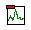

Data acquisition with the Bobcat¶
Department of Mechanical and Materials Engineering Wright State University
Equipment and Software Setup Procedures¶
The following provides instructions for the collection of acceleration data from the cantilever beams in the vibration lab (RC 010) upon excitation from an impulse hammer using Bobcat data acquisition tools.
Channels Configuration¶
- Turn on computer
- Power on Bobcat modem (switch on back)
- Launch Bobcat software. The Local and Viewer windows should appear.
- Define channel parameters. On the Local window menu, select:
- → Setup
- → Channels. The channel definition window should appear. In this window, input the accelerometer serial number and voltage sensitivity for channel 2. These values can be found on a card inside the accelerometer storage case. Also, set the type for channels 3 and 4 to “inactive” as well as the ICP to “on” for channels 1 and 2 as shown in figure 1. Afterwards, select OK.
- → Setup

Figure 1: Channels Configuration Window
- Connect the hammer and accelerometer to the Bobcat modem on channels 1 and 2, respectively.
- Using wax, affix the accelerometer to the beam at the location where a response will be measured. Tape the wire about an inch behind the sensor to the beam.
Set Response Viewing Parameters¶
- Set the plotting parameters for the hammer and accelerometer
responses. On the Viewer window menu, select:
- → View
- Deselect view ports excluding the following:
- Plot toolbar
- Plot definition
- Page Settings
- Deselect view ports excluding the following:
- Locate and click the icon shown in figure 2. The set number of rows and columns window should appear. In this window, change the following parameters as indicated. Afterwards, select OK.
- → View

Figure 2: Viewer Plots Icon
- Rows ›→ 2
- Columns ›→ 1
- Select the top plot and click the plot reduction icon shown in figure 3 until only “A” remains above the plotting region. Right Click on “A” and change the plot color to black. With the top plot still active, set the following parameters as indicated.

{kind=link}
Figure 3: Viewer Plots Icon
- Under “Channel” tab ›→ Ch1
- Under “Ref Channel” tab ›→ Off
- Drop down menu to the upper right of the “Ref Channel” tab ›→ time trace
- Drop down menu to the lower right of the “Ref Channel” tab ›→ volts
- Select the bottom plot and set the following parameters as indicated.
- Under “Channel” tab ›→ Ch2
- Under “Ref Channel” tab ›→ Off
- Drop down menu to the right of the “Ref Channel” tab ›→ time trace
Equipment Test¶
- Set acquisition parameters for equipment test. On the Local window
menu, select:
- → Setup
- → Acquisition. The acquisition window should appear. In this
window, change the following acquisition values as shown in
figure 4. Afterwards, select OK.
- Type ›→ Analysis
- Resolution ›→ 1600
- Bandwidth ›→ 500
- Window Type ›→ None
- Num Avgs ›→ 1
- → Acquisition. The acquisition window should appear. In this
window, change the following acquisition values as shown in
figure 4. Afterwards, select OK.
- → Setup

Figure 4: Acquisition Window
- Set control parameters for data storage. On the Local window menu,
select:
- → Setup
- → Controls. The controls window should appear. In this
window, change the following parameters as indicated.
Afterwards, select OK.
- Data Type ›→ Puma
- File Name ›→ Query
- → Controls. The controls window should appear. In this
window, change the following parameters as indicated.
Afterwards, select OK.
- → Setup
- Open and dock Analyzer control. On the Local window menu, select:
- → View
- → Analyzer control. The analyzer control window should appear. Grab this window and dock it to the Local window.
- → View
- Test the hammer and accelerometer. On the Analyzer control, select:
- → Trigger tab. On this tab, change the following parameters as
indicated. Afterwards, select Apply.
- Source ›→ Free Run
- → Control tab. On this tab, take the following actions as
instructed to test the hammer.
- Be prepared to strike the table with the hammer.
- Click the “Start” button.
- Gently strike the table a few times within the hammer in the same manor intended to excite the beam for data collection.
- Inspect the hammer response (top) plot in the viewer window. Spikes should occur at the time points which the table was struck. Document the amplitude at these voltage peaks. If spikes do not appear, consult the TA.
- → Control tab. On this tab, take the following actions as
instructed to test the accelerom- eter.
- Be prepared to tap the beam with your finger.
- Click the “Start” button.
- Gently tap the beam a few times with your finger.
- Inspect the accelerometer response (bottom) plot in the viewer window. oscillations should occur at the time points which the beam was tapped. If oscillations do not appear, consult the TA.
- → Trigger tab. On this tab, change the following parameters as
indicated. Afterwards, select Apply.
Data Collection¶
- Set acquisition parameters for data collection. On the Local window
menu, select:
- → Setup
- → Acquisition. A pop up window should appear. In this window,
change the following parameters as indicated. Afterwards,
select OK.
- Num Avgs ›→ 5
- → Acquisition. A pop up window should appear. In this window,
change the following parameters as indicated. Afterwards,
select OK.
- → Setup
- Set analyzer control parameters. On the Analyzer control, select:
- → Trigger tab. On this tab, change the following parameters as
indicated. Afterwards, select Apply.
- Source ›→ Ch1
- Theshold ›→ amount determined in equipment test
- Slope ›→ rising
- Arming Mode ›→ Manual
- Manual Accept ›→ Checked
- → Control tab. On this tab, perform the following parameters
tasks as indicated to collect data for each case required.
- Select “Open Data File” at the bottom of the Analyzer control window. Create a file with a meaningful name (eg: “Case 1”) and save it to the desktop
- Click the “Start” button and repeat the following
instructions for all five impulses to generate the average
response for the current case.
- Click the “Manual Arm” button
- Gently strike the beam with the hammer.
- Inspect the hammer response plot. A single impulse peak should appear. Multiple peaks indicate double hits.
- Click “accept” if the hammer response exhibits a single peak, otherwise, click reject and return to step A.
- Use your hand to dampen residual vibrations from previous hits between each measurement.
- Once all measurements for a case have been conducted, click “Stop”.
- Click “Store”.
- Select “Close Data File” at the bottom of the Analyzer control window.
- → Trigger tab. On this tab, change the following parameters as
indicated. Afterwards, select Apply.
Convert Data¶
- Once all data has been collect, each file must be converted to a
Matlab loadable file format. On windows start menu, select:
- → Puma Export Manager. For each data file, perform the following
tasks.
- Locate data file path in the left window.
- Set the output file type as MAT (SDD → MAT).
- Identify the output path in the right window.
- Execute the file conversion by clicking the arrow between input
- → Puma Export Manager. For each data file, perform the following
tasks.